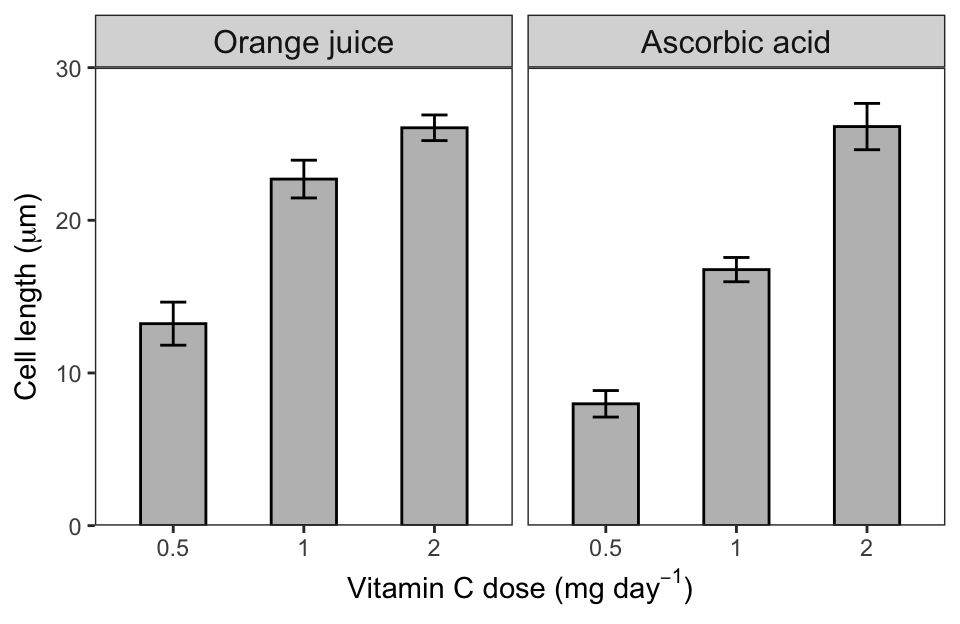

Chapter 10 - One or More Categorical Predictors – Analysis of Variance
Exercise 1 - Multiple-choice quiz
Please note that there is only one correct (or most correct) answer to each question.
The model code related to the exercises below relies on the following R packages (which are autoloaded behind the scenes in this tutorial):
- ggplot2
- dplyr
- emmeans
- multcomp
- multcompView
Exercise 2 - One-way analysis of variance (one-way ANOVA)
A physics laboratory conducted an experiment to compare the
electrical conductivity of five different copper alloys at 20 °C
temperature. The data is compiled in the pre-loaded copper
dataset, which is ready for use in the R code field below. The ‘alloy’
variable contains the five types of alloy (A, B, C, D, E). The ‘cond’
variable indicates the electrical conductivity (given in 107
Siemens per meter, S m-1) and represents the continuous
response variable. For each alloy variety, 20 independent samples were
tested.
Create an exploratory plot of the data.
Use an analysis of variance (ANOVA) approach to compare the electrical conductivity across the 5 different copper alloys.
Use model diagnostic plots to check the underlying assumptions of variance homogeneity and normality and report your findings
If the model assumptions are met and the model summary shows an overall statistically significant effect, then follow up with a post hoc analysis and report which alloy varieties differ from each other given a significance level of \(\alpha = 0.05\).
Produce a publication-quality figure of the data.
Report the results of the statisticaly analysis in a scientifically appropriate way.
## Getting started with a few sanity checks
## Display the top five observations
head(copper)
## Check data structure ('alloy' should be a factor and 'cond' a numeric variable)
str(copper)
## Check data summary
summary(copper)## a. Exploratory plot
# Traditional graphics
boxplot(cond ~ alloy, data = copper)
# ggplot2
ggplot(data = copper, mapping = aes(x = alloy, y = cond)) +
geom_boxplot()
## b. Perform a one-way ANOVA
m1 <- aov(cond ~ alloy, data = copper)
summary(m1)
## Same as above using the lm function
# m1 <- lm(cond ~ alloy, data = copper)
# anova(m1) # same as summary.aov()
## c. Diagnostic plots
par(mfrow = c(2, 2))
plot(m1)
## d. Post hoc analysis (given the overall significance of the alloy effect of P = 0.0114)
TukeyHSD(m1) # works only for function aov()
# More flexible and comprehensive approach using the emmeans package
ems <- emmeans(m1, specs = "alloy")
pairs(ems) # we suggest to use the additional argument adjust = "fdr", see ?p.adjust for more information
cld(ems, Letters = letters) # by default the lowest mean is assigned an 'a'
## e. Publication-quality figure incl. statistical annotation showing the results of the post hoc comparison
posthoc <- cld(ems, Letters = letters)
## Sort dataset in ascending fashion so that alloy A comes first and E last
stats <- arrange(.data = posthoc, alloy)
## Remove white space at the start and end of the significance letters to ensure clean alignment in the plot
stats <- mutate(.data = stats, sig = str_trim(.group))
## Get maximum cond values to guide the placement of the stats annotations
m <- pull(group_by(copper, alloy) %>% summarise(cond = max(cond)))
stats <- mutate(.data = stats, cond = m)
## We could have done this all in one go like this:
stats <- arrange(.data = posthoc, alloy) %>%
mutate(sig = str_trim(.group), cond = pull(group_by(copper, alloy) %>%
summarise(cond = max(cond))))
ggplot(data = copper, mapping = aes(x = alloy, y = cond)) +
geom_boxplot(fill = "grey") +
geom_text(data = stats, aes(x = alloy, y = cond, label = sig), nudge_y = 0.5) +
labs(x = "Alloy variety", y = expression(paste("Electrical conductivity (\u00D7 10"^7, " S m"^-1, ")"))) +
theme_test()
## Compute the percentage difference in electraical conductance between alloy B (lowest conductance) and the other alloys for reporting.
group_by(copper, alloy) %>% summarise(cond = mean(cond)) %>% mutate(change = (1 - cond[2]/cond)*100)
The ANOVA results showed a statistically significant alloy effect
(F4,95 = 3.44, P = 0.011). A post
hoc analysis revealed that the electrical conductivity of alloy B
was significantly lower than that of A, C, and E by more than 20 %
(Figure X†). The electrical conductivity of alloy D did not
differ significantly from any of the other alloys (Figure X).
Click
here
for an example of how to report the statistical findings as specified in
Exercise 2 f.
Exercise 3 - Two-way analysis of variance (two-way ANOVA)
The pre-loaded dataset soilp contains soil phosphorus
concentrations (mg kg-1) derived from two different soil
types: an alluvial soil (soil in proximity to a river experiencing
regular flooding and thus nutrient input) and soil from an upland
terrace (no soil nutrient replenishment through flooding). Soil samples
were taken from the A-, B- and C-horizon. In statistical terms we have a
continuous response variable (soil phosphorous concentration) and two
categorical predictors (soil type given as variable ‘loc’ and soil
horizon given as variable ‘horizon’).
Create an appropriate exploratory plot of the data.
Fit a two-way ANOVA model to the soil phosphorous data using the explanatory variables ‘loc’ and ‘horizon’ including their interaction and print the model summary.
Inspect the model diagnostic plots and comment on whether the variance homogeneity and the normality assumption are met.
If there is a significant interaction term, follow up with a post hoc comparison, i.e. slice† the interaction using the functions in the
emmeanspackage.Report the required metrics related to the interaction term (regardless of whether it is statistically significant) as you would in a scientific paper, thesis or report and produce a publication-quality figure with lower-case letters indicating the results of the post hoc test.
†Slicing means keeping one level of a categorical predictor constant and comparing the levels of another categorical predictor therein.
## Check structure and data summary
head(soilp, n = 3)
str(soilp)
summary(soilp)## a. Graphical data exploration
ggplot(data = soilp, mapping = aes(x = horizon, y = p)) + geom_boxplot() + facet_wrap(facets = ~ loc)
## b. Fit a two-way ANOVA model with interaction
m1 <- lm(p ~ loc * horizon, data = soilp)
## Check model results
summary(m1) # Does not give us an overall P-value of the interaction term.
anova(m1) # Valid for the interaction term, but as the sequence of predictors in the model formula matter, their P-values change when their order changes in the model.
drop1(m1, test = "F") # This likelihood ratio test approach overcomes the 'sequence of predictors issue' and should routinely be used.
## c. Inspect model diagnostic plots
par(mfrow = c(2, 2))
plot(m1)
# The plot of the residuals vs. fitted values indicates homoscedasticity and the Q-Q plot shows only minor deviations from normality, which we do not need to worry about. No influential observations are flagged.
## d. Post hoc analysis. We can slice the interaction in two ways: i) pairwise comparisons of the horizons with a given soil type or ii) compare the two soil types within each horizon. In cases where it makes sense like in this example, we can also ask for all possible pairwise comparisons.
ems1 <- emmeans(object = m1, specs = "horizon", by = "loc") # compare horizons within soil type
ems2 <- emmeans(object = m1, specs = "loc", by = "horizon") # compare soil types within horizon
ems3 <- emmeans(object = m1, specs = ~ loc * horizon) # get all possible pairwise comparison
ems1
ems2
ems3
pairs(ems3, adjust = "fdr") # fdr = false discovery rate method (more powerful than other multiplicity adjustments such as the bonferroni method)
## Get significance letters for statistical annotation of the figure
cld(ems3, Letters = letters, adjust = "fdr")
## e. Publication-quality figure
locs <- function(x) { c("Alluvial", "Terrace") } # custom facet labels
stats <- group_by(soilp, loc, horizon) %>% summarise(max = max(p)) %>% add_column(sig = c("c", "b", "ab", "b", "ab", "a"))
ggplot(data = soilp, mapping = aes(x = horizon, y = p)) +
geom_boxplot() +
geom_text(data = stats, aes(x = horizon, y = max, label = sig), nudge_y = 15, size = 4) +
labs(y = expression(paste("Soil phosphorus (mg kg"^-1, ")")), x = "Soil horizon") +
facet_wrap(facets = ~ loc, labeller = labeller(loc = locs)) +
theme_test()
We found a statistically significant soil horizon × location
interaction (F2,48 = 4.64, P = 0.014). The
interaction was mainly driven by the very high phosphorous concentration
in the A-horizon of the alluvial soil, which was significantly greater
than in all remaining horizons, regardless of soil type (Figure
X†). The lowest phosphorous concentration was seen in the
C-horizon of the terrace soil, which was significantly lower than in all
other horizons apart from the C-horizon in the alluvial soil and the
B-horizon in the terrace soil (Figure X).
Click
here
for an example how to report the statistical findings as specified in
Exercise 3 e.
Enter your R code for the publication-quality figure from Exercise 3 e here.
## e. Publication-quality figure
locs <- function(x) { c("Alluvial", "Terrace") } # custom facet labels
stats <- group_by(soilp, loc, horizon) %>% summarise(max = max(p)) %>% add_column(sig = c("c", "b", "ab", "b", "ab", "a"))
ggplot(data = soilp, mapping = aes(x = horizon, y = p)) +
geom_boxplot() +
geom_text(data = stats, aes(x = horizon, y = max, label = sig), nudge_y = 15, size = 4) +
labs(y = expression(paste("Soil phosphorus (mg kg"^-1, ")")), x = "Soil horizon") +
facet_wrap(facets = ~ loc, labeller = labeller(loc = locs)) +
theme_test()Exercise 4 - Understanding ANOVA tables
4.1 An experiment was carried out to compare biomass yields (plant dry weight) attained under control and two different treatment conditions. Inspect the one-way ANOVA output below and calculate the missing values for the denominator degrees of freedom and the F-value.
| Df | Sum Sq | Mean Sq | F value | P(>|F|) | ||
|---|---|---|---|---|---|---|
| group | 2 | 3.766 | 1.8832 | ??? | 0.0159 | * |
| Residuals | ??? | 10.492 | 0.3886 |
Solution
| Df | Sum Sq | Mean Sq | F value | P(>|F|) | ||
|---|---|---|---|---|---|---|
| group | 2 | 3.766 | 1.8832 | 4.846 | 0.0159 | * |
| Residuals | 27 | 10.492 | 0.3886 |
4.2 In a food laboratory, the amount of sugar (grams per serving) for three varieties of ice cream from different manufacturers was measured. Calculate the missing values in the partial ANOVA table below. Given a significance level of 0.05 (\(\alpha\) = 0.05), is there a significant difference in mean sugar content for the three ice cream varieties? Assume that the underlying model assumptions were not violated.
| Df | Sum Sq | Mean Sq | F value | P(>|F|) | |
|---|---|---|---|---|---|
| Between-group variance | 2 | 37.0 | |||
| Within-group variance | 23 | 195.2 |
Solution
| Df | Sum Sq | Mean Sq | F value | P(>|F|) | |
|---|---|---|---|---|---|
| Between-group variance | 2 | 37.0 | 18.500 | 2.180 | 0.136 |
| Within-group variance | 23 | 195.2 | 8.486 |
4.3 In a scientific paper the results of a one-way analysis of variance (one-way ANOVA) are reported for a study comprising 48 observations. The model output shows 5 numerator degrees of freedom (dfnum). How many observations were in each group and how many denominator degrees of freedom (dfden) are associated with this analysis?
Solution
dfnum = number of groups – 1, i.e. there were six
groups and given the 48 observations, there must have been 8
observations in each group.
dfden =
number of observations – number of groups, i.e. 48 - 6 groups =
42 dfden
4.4 In a chemistry experiment, the effect of two different types of catalysts on the rate of a chemical reaction was investigated. The trial comprised the catalysts platinum and palladium and a control (no catalyst). For each treatment level (control, platinum, palladium), the researchers conducted 10 trials of the chemical reaction under controlled laboratory conditions. Assume that the model assumptions of variance homogeneity and normality were not violated.
Use the information provided to test at \(\alpha\) = 0.05 whether there is a significant difference among the levels of the catalyst treatment given a sum of squares between groups (i.e. between treatment levels) (SSbetween) of 221.3 and a sum of squares within groups (SSwithin) of 576.8.
Solution
The experiment comprised three treatment groups, i.e. we have 2 numerator degrees of freedom (dfnum) (no. of groups – 1). There were 30 runs in total (n = 30), so that gives n – no. of groups = 30 – 3 = 27 denominator degrees of freedom (dfden). With this information we can work out the respective mean squares (MS), whose ratio gives the F-statistic.
\[MS_{between} = SS_{between} - df_{num} = 221.3/2 = 110.65\]
\[MS_{within} = SS_{within} - df_{den} = 576.8/27 = 21.36\] \[F = \frac{MS_{between}}{MS_{within}} = 110.65/21.36 = 5.180\]So, how does this F-value compare to the critical F-value of an F-distribution with 2 dfnum and 27 dfden?
## Compute the critical F-value of an F-distribution with 2 numerator degrees of freedom and 27 denominator degrees of freedom.
qf(p = 0.05, df1 = 2, df2 = 27, lower.tail = F)## [1] 3.354131The F-value of 5.180 resulting from our ANOVA model is greater than the critical F-value of 3.354, prompting us to reject the null hypothesis of no difference between groups (factor levels).
We can also simply compute the P-value associated with F2,27 = 5.180 and compare it to the significance level \(\alpha\) = 0.05.
## Compute the P-value associated with the F-statistic from the ANOVA model given the 2 and 27 degrees of freedom.
pf(5.180, df1 = 2, df2 = 27, lower.tail = F)## [1] 0.01247148Our P-value of 0.0125 is smaller than our significance level of 0.05 indicating an overall statistically significant effect (a statistically significant difference between at least two of the predictor levels).
Exercise 5 - Model specification
The figure below shows a continuous response variable ‘Cell length’ (µm) and two categorical explanatory variables ‘Vitamin C dose’ (0.5, 1, 2 mg day-1) and ‘Supplement’ (orange juice, ascorbic acid), describing the amount and form of the administered vitamin C (‘vitamin C dose’), respectively. Since there are only three vitamin C doses, this predictor could be regarded as a categorical variable (a factor with three levels).

- What model would you fit to this dataset? Write down the common model name as specifically as possible as well as the model equation in R code using the variable names given above.
A two-way ANOVA model with interaction.
Click
here
for a model answer.
m1 <- lm(cell_length ~
vitamin_c_dose * supplement, data = …) # aov() can also be used
- Explain what a significant interaction between ‘Vitamin C dose’ and ‘Supplement’ would mean in this scenario.
Click here for a model answer.
A ‘Vitamin C dose’ × ‘Supplement’ interaction means that the dose effect of vitamin C on cell length varies significantly with the type of supplement provided. Alternatively, one could say that the two supplements significantly differ in their effect on cell length growth but this effect depends on the vitamin C dose.